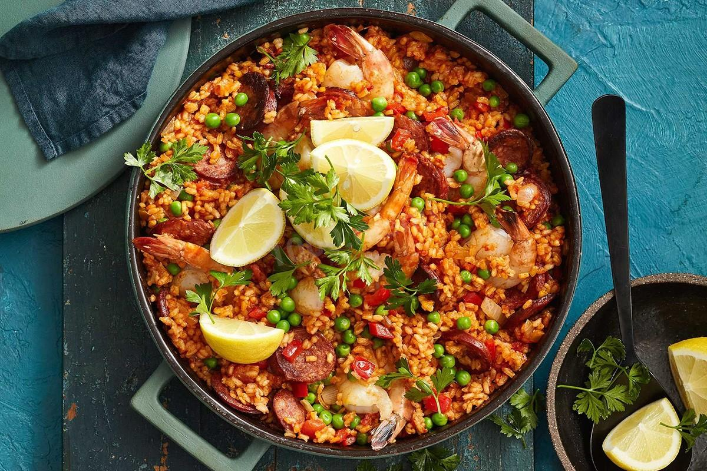
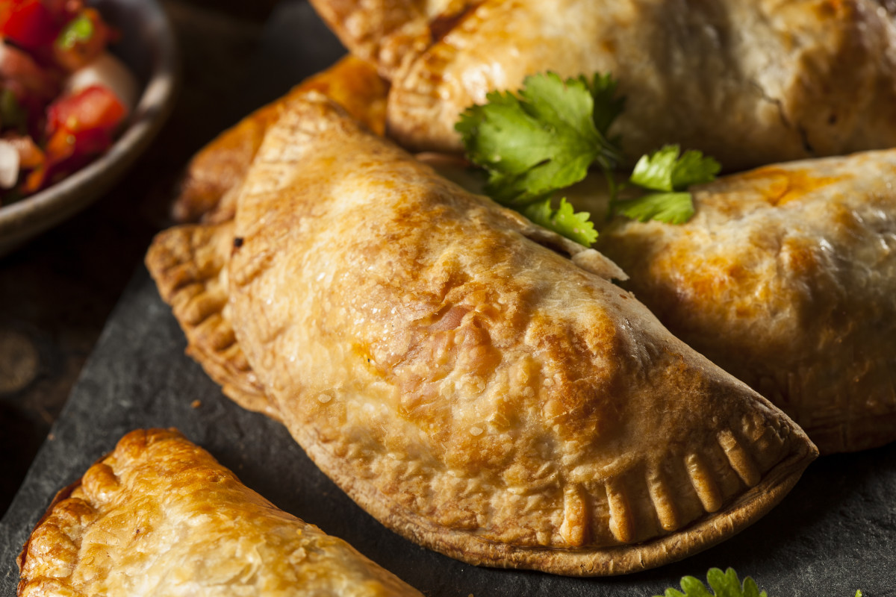
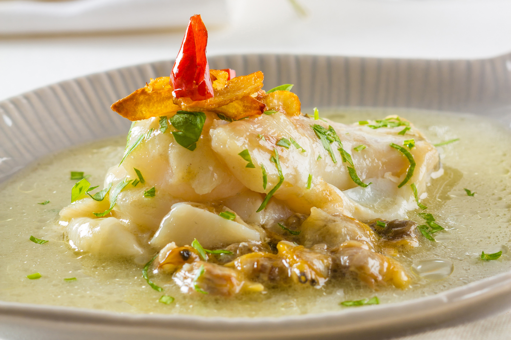
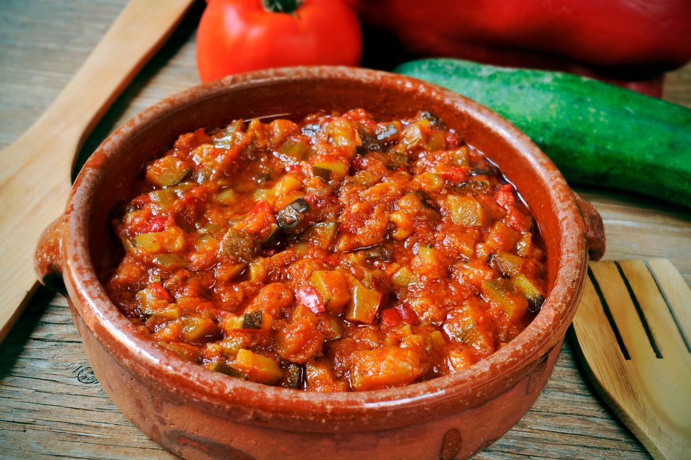
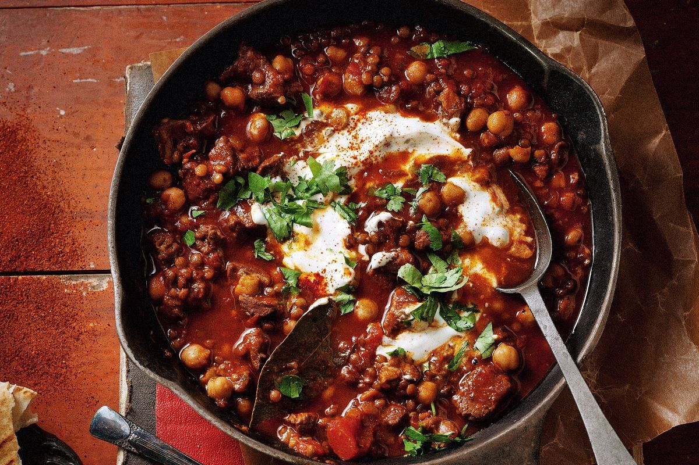
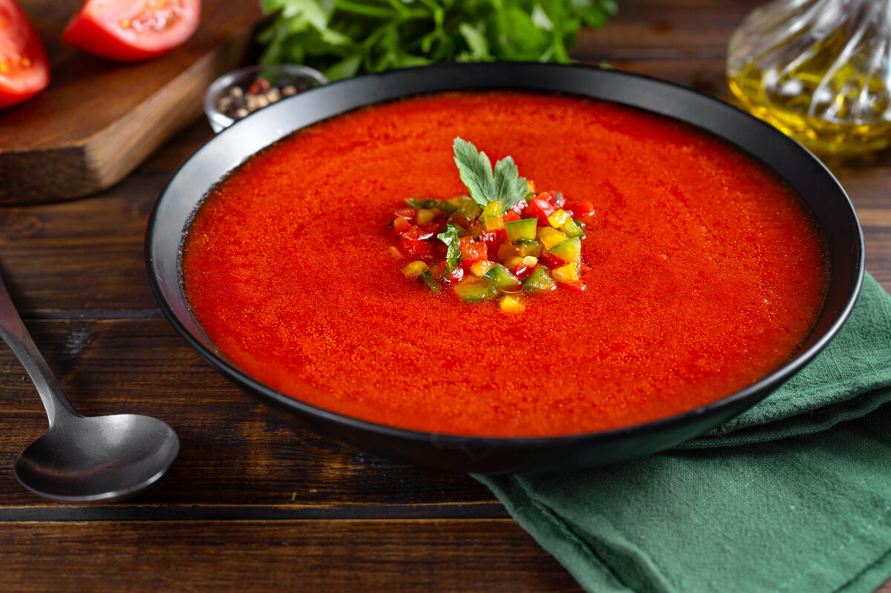

| Фото | Название | Ингредиенты | Рецепт |
|  | Паэлья |
- 1 кг риса
- 2 кг куриного мяса
- 300 г томатов
- 500 г стручковой фасоли
- 300 мл масла
- 3,5 л воды
- 100 г перца
|
Рецепт |
|  | Эмпанада |
- Стейк «Сирлойн» — 450 грамм
- Луковица большая — 1 шт.
- Перец красный — 1 шт.
- Маслины — 10 шт.
- Томатная паста — 1 ст.л.
- Мука пшеничная — 500 грамм
- Сливочное масло (холодное) — 150 грамм
|
Рецепт |
|  | Треска "пиль-пиль" |
- 4 куска филе трески
- 1/4 л оливкового масла
- 6 зубчиков чеснока
- 1 перец чили
|
Рецепт |
|  | Тушеные овощи "писто манчего" |
- 6 яиц
- 4 крупных зрелых томата
- 2 крупных луковицы
- 2 сладких зеленых перца
- 1 красный перец
- 100 г кубиков хамона
- оливковое масло
|
Рецепт |
|  | "Косидо" |
- 250 г нута
- 300 г говяжьей рульки
- ¼ курицы
- 1 кг капусты
- 4 средние картофелины
- 2 моркови
- 100 г тонкой лапши
|
Рецепт |
|  | "Гаспачо" |
- 1 кг спелых томатов
- 2 небольших зеленых перца
- 2 зубчика чеснока
- 100 г крестьянского хлеба
- 4 столовые ложки оливкового масла
- 1 столовая ложка хересного уксуса
- вода
|
Рецепт |